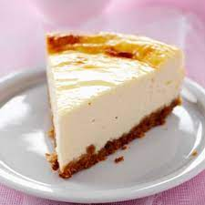

notre patisserieتايستي creer le 15 nov 1999
special gateau home , تايستي recu le prix de la meilleure patisserie pour les dernier
5ans
Préparation de pâte sucrée cuite au four,
généralement dans un moule, et destinée à être consommée
fraîche après avoir été éventuellement garnie d'une crème,
d'un glaçage, etc. Gâteau feuilleté; gâteau de fête, de mariage,
de ménage; gâteau au chocolat, à la crème, aux amandes, aux pommes,
moule à gâteau; service à gâteau(x); part de gâteau. Nos goûters chez le
pâtissier du boulevard; tu sais, ces petits gâteaux aux fraises que tu adorais?
(Zola, Curée,1872, p. 482).Ce sont (...) les marchandes de gâteaux (...)
qui promènent et offrent leurs gâteaux. Il y en a de toute sorte : des ronds
et des bombés comme des couronnes, des tressés comme des nattes et d'autres
tortillés en forme de huit, et d'autres levés en forme de petits pains. Ils
sont croquants, sucrés, et parfumés de grains d'anis